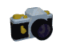

| Map Making Made Easy |
| OK You seen the maps I have made and you say you want to make your own? No problem. Heres how to make them. Step 1: Location. Go to the place where you want to make the map of. Be sure that the coast is clear or you have someone to keep the crits off your back while you take pics and save them for later processing. It takes about 30 to 45 seconds to take the pic, paste and then save. So find a spot to hide or have your buddy watch your back. Step 2: Click the Pic. Have Windows Paint running in the background while you play. Never know what will make a good pic. To take a pic, Press the Print Screen Key. This copies the current screen graphics to the clipboard. This will include anything on the screen, whatever programs are running. Step 3: Save the Pic. Switch to Window's Paint after taking pic. Click Edit and then click Paste. When taking the first pic and it asks to enlarge the bitmap, click Yes. After pic is pasted, grab the lower right corner of the pic and drag the outside of pic to match the terrain window as you don't want any extra garbage to deal with or save. Step 4: Repeat Steps 1 - 3. Repeat the sequence until you have taken enough pics to cover area being mapped. Try to get all features, NPCs and any revelant graphics necessary to make your map. Try to overlap a little just in case you missed something. Step 5: Clean up. After you have taken all necessary pics. Open each and set color to white. Use Fill (paint spilling bucket) to fill in any big black areas (hidden/unseen). Use rectangular cropping tool to Cut away any extra mess. Don't be afraid to fake it if you don't have all of the pic you need. Sometimes you have to doctor the pic to make it look right. I take out all the little figures of me in the pic. Copy and Paste floors to cover up any garbage. Use the eyedropper to match colors and the pencil to color pixels. When cleanup is completed, all that should remain is the piece on a white background. Save till later. Step 6: Jigsaw Puzzle. Another way to enjoy Drakkar! Open 2 Windows Paint programs at the same time. One will hold the map being worked on, the other will hold the piece being worked on. Some additional editing may be required to make it fit. On map program, make sure pic size is big enough to hold all of the pieces when fitted together. Start with a pic size of 1500 by 1500 pixels and enlarge if necessary. After you are done with the map, you can reduce the size if needed. Save empty pic with the name of the map. Switch to piece program, open one/first pic and click Edit , then click Select All. Click Edit again and then click Copy. Switch to map program and click Edit, then click Paste. You can move the piece by clicking and dragging to the right spot. Right clicking will give the choices in the Edit column as well. Step 7: Repeat Step 6. Keep switching back and forth between map and piece programs, opening a new pic, copying and pasting to the map program. Zoom in on the map to align the pieces correctly. Look for common pixels to align to. Keep repeating Step 6 until all pieces are placed on the map and SAVE EVERY TIME YOU PLACE A PIECE so you can revert back if you make a mistake. Step 8: Finishing the map. After all pieces are in the map. Go back and edit any spots that seem out of place. Select black color and click Fill. Fill in any spaces with black for good clarity. Add your name for all to see who made it. Make a final save when done. Use a program that can convert to .JPG or .GIF so your pic can be placed on a website. Most webspaces won't accept .BMPs And thats all there is to it.... |
| Back to Bits of Info. |
 |